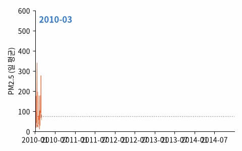

Liang et al. (2015). 베이징 미국 대사관 측정소의 2010~2014 시간별 PM2.5 (㎍/㎥) + 이슬점 · 기온 · 기압 · 풍향 · 풍속 · 눈 · 비 (43,824시간)

| year | month | day | hour | pm2.5 | DEWP | TEMP | PRES | cbwd | Iws | Is | Ir |
|---|---|---|---|---|---|---|---|---|---|---|---|
| 2010 | 11 | 25 | 23 | 168 | -10 | -3 | 1024 | NW | 1.79 | 0 | 0 |
| 2013 | 1 | 18 | 9 | 82 | -12 | -8 | 1029 | NW | 6.26 | 0 | 0 |
| 2013 | 1 | 27 | 1 | 307 | -8 | -5 | 1030 | NE | 0.89 | 0 | 0 |
| 2014 | 11 | 6 | 17 | 6 | -13 | 9 | 1030 | NE | 59.9 | 0 | 0 |
| 2014 | 5 | 20 | 4 | 197 | 15 | 18 | 1003 | NW | 1.79 | 0 | 0 |
| 2013 | 3 | 13 | 18 | 23 | -15 | 6 | 1028 | SE | 4.92 | 0 | 0 |
| 열 | 종류 | 빈칸 | 고유값 수 | 범위 · 대표값 |
|---|---|---|---|---|
| year | 숫자 | 0 | 5 | 2010 ~ 2014 (평균 2012) |
| month | 숫자 | 0 | 12 | 1 ~ 12 (평균 6.524) |
| day | 숫자 | 0 | 31 | 1 ~ 31 (평균 15.73) |
| hour | 숫자 | 0 | 24 | 0 ~ 23 (평균 11.5) |
| pm2.5 | 숫자 | 4.7% | 581 | 0 ~ 994 (평균 98.61) |
| DEWP | 숫자 | 0 | 69 | -40 ~ 28 (평균 1.817) |
| TEMP | 숫자 | 0 | 64 | -19 ~ 42 (평균 12.45) |
| PRES | 숫자 | 0 | 60 | 991 ~ 1046 (평균 1,016.4) |
| cbwd | 글자 · 범주 | 0 | 4 | 가장 흔한 값: SE (34.9%) |
| Iws | 숫자 | 0 | 2788 | 0.45 ~ 585.6 (평균 23.89) |
| Is | 숫자 | 0 | 28 | 0 ~ 27 (평균 0.0527) |
| Ir | 숫자 | 0 | 37 | 0 ~ 36 (평균 0.1949) |
겨울 (난방철) 에 높다
밤에 높고 오후에 낮다
| ① 한 행 | 한 시간 |
| ② 입력 X | 지금 PM2.5 · 지난 몇 시간 · 기온 · 바람 · 습도 · 달 · 시각 |
| ③ 출력 y | 24시간 뒤 PM2.5 (㎍/㎥) |
| ④ 평가지표 | MAE, '매우 나쁨' (76 이상) 재현율 |
| ⑤ 기준선 | 지금 값 그대로 |
문제를 정할 때 처음 채워 보는 칸들입니다. 여기서 끝이 아니라, 시험 데이터를 어떻게 나눌지 · 틀렸을 때 손해가 얼마인지 · 예측 시점에 정말 알 수 있는 값인지 같은 칸을 더 붙일수록 좋은 문제가 됩니다.
same as now MAE 67.4 recall of 'very bad' 61% train mean MAE 69.0 recall of 'very bad' 100% gradient boosting MAE 59.9 recall of 'very bad' 84%
누가, 왜, 어떻게 만든 데이터인지 직접 확인해 보세요.
프로젝트 주제를 고를 때 참고하세요 (일반적인 예시).